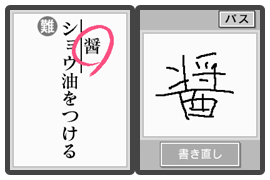

--前作が非常にいい評判だったと伺っていますが。
河本：お陰様でかなり高い評判を頂き、品切れが続いていたという状態も一時あったようです。特に中〜高年齢層の皆さんからも大変好評でして、続編を作ることになりました。クチコミの成果か一作目は未だに売れ続けています。
境野：以前より、ユーザーの方々から「もっとトレーニングをしたい」というご要望を頂いていたんです。さらに新鮮な気持ちで脳を鍛えたい、と。ということで、全てのトレーニング、脳年齢チェック、イベントを入れ替えて一新しています。ボリュームも前作より多いですよ。
西田：コンセプトが『大人なら誰でもできるように』というもので、手書きのトレーニングが多く、書いたらすぐ次の問題へ移れる、というような部分が既存のゲームとは違うと思います。その点がご年配の方にもかなりいい評価を頂いたのではないかと。
--今作で注目すべき部分はどこでしょう？
河本：漢字の書き取りをする所が一番ですね。書き取りのデータを延べで約900名分ほど収集しまして、認識データとして取り込んでいます。約3000種類の漢字を認識できるんですよ。
--急いで書くとつい崩して書いたりするのに、意外と認識しますよね。
西田：一応、正しい書き順に則っていれば認識するようになってるんですが、データ元になっている人の筆跡がいい加減であればあるほど、崩しても読み取られるという感じですね(笑)。
--漢字認識を実装したのはなぜですか？
境野：川島先生のドリルに漢字書き取りがあったからです(笑)。
西田：書き取りができないとかなりショックを受けますね。
松下：知ってるつもりでも、いざ書くとなると手が動かなかったりします。いまはパソコン入力が主流ですから、変換できても書くことは忘れてしまっているんじゃないでしょうか。

境野：これのお陰で、『醤油』とか書けるようになりましたよ。
松下：漢字を取り戻しました。
河本：いい感じに、ですね(笑)。
--企画自体はいつ頃からだったんでしょう。前作が発売されてから、あまり時間が経っている印象がないのですが。
河本：大体、夏頃だったと思います。あまり長い時間がなかったので、がんばりました。
境野：やはり前作同様、普段ゲームをしない方にも広く楽しんで頂けるように、制作を進めていきました。
西田：川島先生にもご協力頂けることになり、実現しました。
--ポリゴンで登場されるだけに、ちょっと先生のことも気になりますよね。
河本：こちらが「こういう感じで作ります」と伝えると、「こうしたらどうでしょう？」というようにアドバイスをして下さって。
西田：それがまた、先生の(メールでの)返事が早いんですよ。こちらが送信して10分経たないうちにすぐお返事下さったりするので、「お忙しいのにメールのご返事が早いですね」とたずねたら「忘れてしまうと困るので、早く出すようにしているんです」とおっしゃられていました。
松下：お返事が早いので、かなり助かりました。
|
|